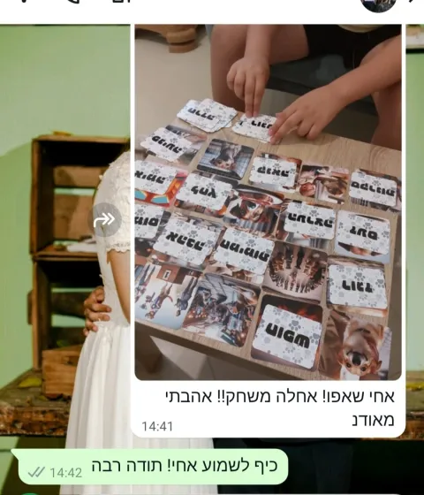
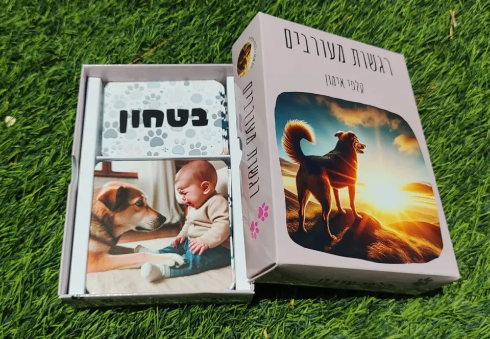
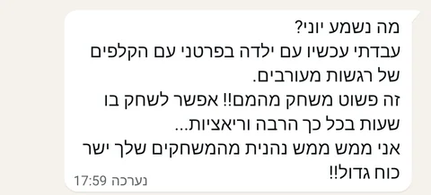
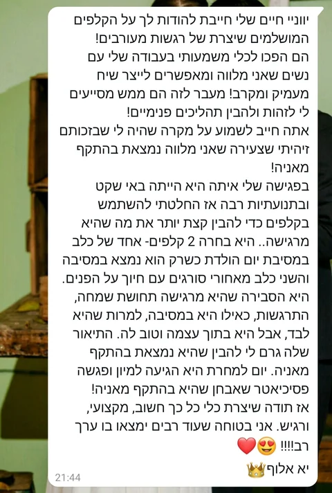

לקריאת ההמלצה המלאהאחי שאפו!! אחלה משחק!! אהבתי מאודהודעת WhatsApp
אותה תמונה יכולה לעורר רגשות שונים, ולפעמים גם כמה רגשות יחד. משחקים, בוחרים קלפים ופותחים שיחה על מה שעובר עלינו.
165 ₪
משלוח עד הבית ב־35 ₪ בלבד · איסוף עצמי ללא עלות מבאר שבע
לפרטים ולהזמנה בוואטסאפ
לפעמים יודעים בדיוק מה מרגישים, ולפעמים כמה רגשות מתערבבים יחד. ״רגשות מעורבים״ מחבר בין תמונות למילים, ונותן דרך משחקית להתחיל לדבר על מה שקורה בפנים.
כל משתתף יכול לראות משהו אחר באותה תמונה. דרך הבחירות והסיפורים מגלים נקודות מבט שונות, מכירים עוד מילים לרגשות ומקשיבים לחוויה של מי שמולנו.
מתאימים רגש לתמונה, מחפשים תמונה שמבטאת שני רגשות יחד, בונים שרשרת רגשות או מספרים סיפור. אפשר גם לפרוס את התמונות ולבחור אחת שמתחברת למשפחה, לחברים או לחוויה אישית, בלי לשחק לפי חוקים קבועים.
מגיל 4 ומעלה, לשני משתתפים ומעלה. מתאים למשחק משותף ולשיח בטיפול, בחינוך ובבית.
הודעות ותגובות על רגשות מעורבים, במילים של מי שכתבו אותן.

לקריאת ההמלצה המלאהאחי שאפו!! אחלה משחק!! אהבתי מאודהודעת WhatsApp

לקריאת ההמלצה המלאהזה פשוט משחק מהמם!! אפשר לשחק בו שעות בכל כך הרבה וריאציות...הודעת WhatsApp

לקריאת ההמלצה המלאההם הפכו לכלי משמעותי בעבודה שלי עם נשים שאני מלווה ומאפשרים לייצר שיח מעמיק ומקרב!הודעת WhatsApp
לפרטים על המפגשים, המשחקים והכלים — מוזמנים ליצור קשר.